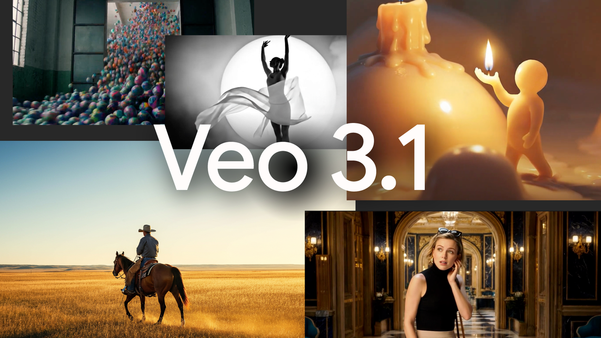
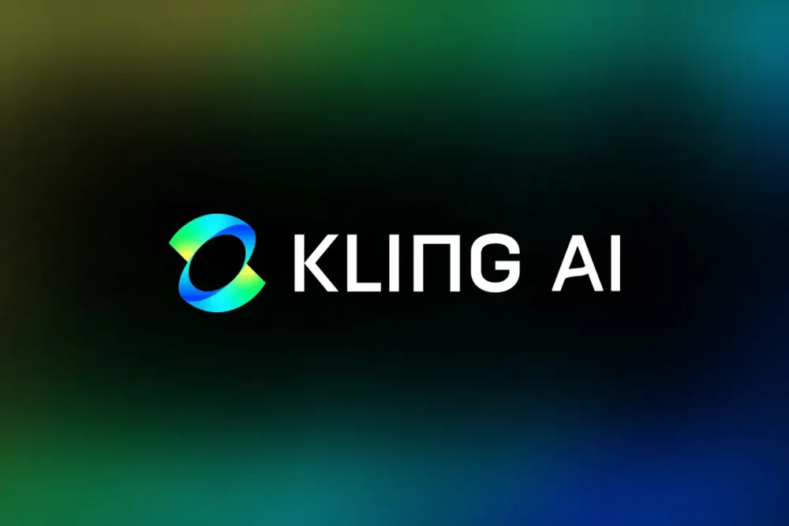
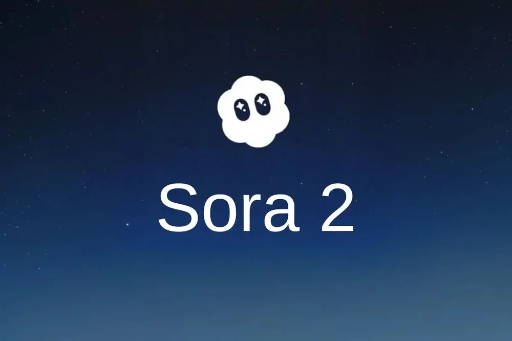
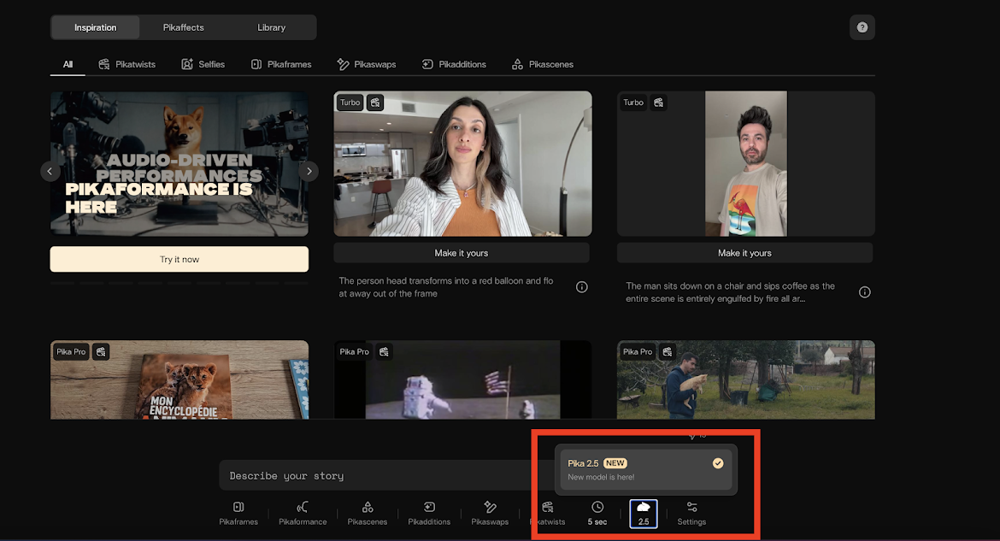

Video generator tools are a type of artificial intelligence (AI) that can create videos automatically. Instead of recording with a camera or editing clips manually, users can simply type a script, upload images, or choose a style, and the AI will generate a full video.
These tools are becoming more popular because they make video creation faster and easier. However, just like image generators, they can also be used to create misleading or fake content, which is why it is important to understand how they work.
How Video Generator Tools Work
Video generator tools are trained using large amounts of video, audio, and text data. They learn how movements, voices, and visuals work together in real videos.
When a user gives input—such as a script or prompt—the AI processes it and generates a video by combining:
- Visual elements (characters, backgrounds, animations)
- Audio (voice narration, music, sound effects)
- Timing and transitions
Some tools can even create realistic human avatars that speak based on the text provided. Others can turn still images into moving scenes or animate faces. Because of these capabilities, AI-generated videos can sometimes look very real, even if they were never recorded in real life.
Common Features of Video Generator Tools
Most video generator tools offer features such as:
-
1
Text-to-video
Turn written scripts into full videos
-
2
AI avatars
Digital people that can speak and present content
-
3
Voice generation
Convert text into realistic speech
-
4
Templates
Ready-made styles for different types of videos.
-
5
Automatic editing
Add transitions, subtitles, and effects automatically
These features allow users to create videos without advanced editing skills.
Examples of Video Generator Tools
1. Google Veo 3.1

Google Veo 3.1 is considered one of the most advanced AI video generators today because of its strong realism and ability to follow detailed prompts accurately. This means that when users describe a scene, the output video closely matches what they imagined.
One of its key features is “ingredients-to-video,” where users can combine multiple inputs such as text, images, and references to guide the final result. This allows for more control over how the video looks. It also supports vertical video formats, which are commonly used for platforms like TikTok and Instagram.
Because of its balance between quality, control, and flexibility, Google Veo 3.1 is often used for both creative projects and professional content creation.
2. Kling AI

Kling AI is known for producing highly realistic and smooth video outputs at a fast speed. It focuses on generating lifelike motion, making its videos look more natural compared to other tools.
A standout feature of Kling AI is its “multi-elements” tool, which allows users to edit specific parts of a video, such as changing objects or adjusting certain details without affecting the entire scene. It also supports both text-to-video and image-to-video generation, giving users multiple ways to create content.
Another useful feature is the ability to define starting and ending frames, which helps guide how the video begins and finishes. This makes Kling AI especially useful for storytelling and controlled video creation.
3. Sora 2

Sora 2 is a powerful AI video model designed to create highly detailed and realistic videos. It is known for handling complex scenes, such as multiple characters, dynamic environments, and smooth camera movements.
This tool is often aimed at professional-level use, especially for cinematic content. It can generate videos that feel like they were filmed in real life, with attention to lighting, physics, and motion.
Because of its high level of realism, Sora 2 can be used in filmmaking, advertising, and storytelling. However, this also means it raises concerns about deepfakes and misleading content, since the videos can be very difficult to distinguish from real footage.
4. RunwayML
RunwayML is one of the early platforms that helped popularize AI video generation and editing. It offers a wide range of tools that go beyond simple video creation.
Users can:
- Generate videos from text
- Edit existing videos using AI
- Remove or replace backgrounds
- Apply visual effects automatically
RunwayML is widely used by creators, designers, and video editors because of its flexibility and powerful features. It allows more hands-on control compared to simpler tools, making it suitable for both beginners and advanced users.
5. Pika 2.5

Pika 2.5 is known for being fast, creative, and especially strong in generating animated or stylized videos. It is a popular choice for users who want visually unique and expressive content.
This tool focuses more on creativity rather than strict realism. It can produce:
- Animated scenes
- Stylized movements
- Imaginative visuals
Because of its speed and ease of use, Pika 2.5 is great for quick content creation, especially for social media or creative storytelling. It allows users to experiment with different ideas and styles without needing advanced skills. While it may not always match the realism of other tools, it stands out for its artistic and dynamic results.
Why People Use Video Generator Tools
People use video generator tools because they save time and effort. Creating videos traditionally requires filming, editing, and technical skills, but AI tools simplify this process. Users can quickly produce videos for presentations, social media, education, and marketing.
These tools are also useful for people who do not have access to cameras, actors, or editing software. With just a script, they can create professional-looking videos.
Risks and Misuse
While video generator tools are useful, they also come with serious risks.
Some AI-generated videos can be used to:
- Spread false information
- Create fake speeches or statements
- Impersonate real people (deepfakes)
These videos can look and sound very real, making them harder to detect than AI-generated images. Because of this, video generator tools can be used to manipulate opinions or mislead viewers.
What We've Learned
Video generator tools are powerful AI technologies that can create videos from text, images, or scripts. They offer many useful features like AI avatars, voice generation, and automatic editing, making video creation faster and more accessible.
However, these tools can also be used to create realistic but fake videos. Because of this, it is important to stay informed and think critically about the videos you watch. Understanding video generator tools helps you identify AI-generated media and avoid misinformation in today’s digital world.
AI-generated videos can look real, including voices, faces, and movements. Do not assume a video is authentic without checking reliable sources